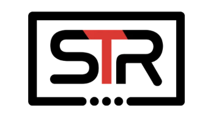

Giving STR a safer path off Autotask without forcing them to abandon the tools they already like.
STR is evaluating Rev.io before the November 1 Autotask renewal window. The decision hinges on migration confidence, technician experience, reporting, automation, and proving Rev.io adds PSA value while STR keeps NinjaOne, IT Glue, HubSpot, QuickBooks Online, Outlook, Rewst, and other core tools.
An anti-corporate MSP built around flat-fee service, proactive maintenance, and no long-term lock-in.
Business profile
STR Technologies is a Union, Missouri MSP serving businesses across Greater St. Louis, including manufacturers, engineers, construction companies, healthcare providers, law firms, and retailers.
Brand promise
STR positions against contract-heavy MSPs: flat monthly fee, no contracts, cancel anytime, and an incentive model where STR wins when client environments stay healthy.
Operating maturity
Founded in 2006, STR lists 10+ team members, 110+ years of combined experience, and 24/7 monitoring and support — so the PSA has to support scale without making the team feel corporate.
Source basis: STR website positioning plus the STR Technologies Value Planner in Notion.
Autotask is not catastrophically broken — but the operating environment is getting harder to scale.
Renewal timing creates a window
The November 1 Autotask renewal gives STR a defined checkpoint to decide whether the switching lift is worth it now or whether to stay locked into the current PSA cycle.
Migration risk is the biggest objection
Todd is cautious because switching PSAs is a major lift. Rev.io has to lead with a clear Autotask API migration plan, data-load timeline, onboarding model, and training approach.
Automation expectations are rising
STR already uses Rewst and wants more automation around reporting, project creation, client-facing tools, and internal workflows.
Billing may not scale as-is
Billing is not the main driver today, but Sally currently pulls invoice data from roughly seven sources each month — a process that becomes riskier as STR grows.
STR needs a better PSA layer without disrupting the systems and workflows already working for them.
Data is fragmented
Workflows and data are spread across Autotask, NinjaOne, IT Glue, Rewst, QuickBooks Online, TD Synnex, Cove, HubSpot, Outlook, and other tools.
Technician experience matters
STR needs cleaner ticketing, mobile workflows, timers, notes, photos/videos, signature capture, offline mode, assets, dispatch maps, and timesheets.
Reporting needs to be easier
STR wants custom dashboards, scheduled reporting, real-time data, SQL/BI access, Revii-generated reports, and role-based visibility.
Some gaps need transparency
Inbound SMS, native client self-scheduling, and Amazon integration are not fully supported today. Rev.io should show current alternatives and be clear about roadmap or feasibility.
The business case is better daily execution now, with billing consolidation as future upside.
Lower migration anxiety
A documented Autotask migration path, supplemental data loads, final pre-go-live load, US-based onboarding, and training resources can reduce the perceived switching risk.
Improve technician speed
Ticket summaries, note cleanup, timers, mobile workflows, dispatch views, Outlook sync, and Revii-assisted actions can reduce admin drag in the service desk.
Strengthen reporting
Custom dashboards, scheduled reporting, SQL/BI access, and natural-language reporting help STR scale insight without adding more manual exports.
Preserve preferred tools
Rev.io should enhance the stack through integrations — especially NinjaOne asset/alert sync — rather than positioning RMM replacement as the reason to switch.
Impact estimates are directional assumptions from the Value Planner. Exact ROI should be firmed up with Autotask renewal terms, tool costs, ticket volume, technician count, billing prep hours, report cadence, and automation volume.
What Rev.io must validate before STR can justify switching away from Autotask.
Service desk / mobile
- Custom boards, views, inline editing, SLA timers, reason codes, 15-minute rounding, email from tickets, outbound SMS, and customer communication history
- iOS/Android workflows: ticket list, calendar, timers, notes, media, signatures, offline mode, parts, assets, dispatch map, and timesheets
Systems to keep / integrate
- NinjaOne asset and alert sync
- IT Glue, QuickBooks Online, Outlook, TD Synnex, Pax8, Ingram Micro, HubSpot, Zoho, Salesforce, and Acronis future conversation
- Rewst API / automation strategy validation
Follow-up demo priorities
- Project management: phases, milestones, Gantt/table views, project tickets, job costing, and project billing
- Analytics/reporting and role-based visibility
- Autotask replacement workflows and migration plan
Known limitations
Inbound SMS, native client self-scheduling, and Amazon integration are not currently complete. Show available workarounds like Outlook/Microsoft Bookings sync and clarify roadmap feasibility.
Buying committee
Todd owns executive decision risk, Josiah validates APIs/workflows/reporting/Rewst, Sally validates billing impact, Dillan represents day-to-day service operations, and Tony should stay involved for solution validation.
Make the next conversation concrete: migration path, operational fit, and renewal timeline.
1. Recap and follow-up
Andy sends the recap email, meeting recording, and available follow-up times, then follows up by mid-to-late next week if STR does not respond first.
2. Confirm deadline
Confirm whether November 1 is the true Autotask renewal decision deadline and what notice, commercial, or implementation milestones must happen before then.
3. Deeper demo
Schedule a focused demo with Todd, Josiah, Sally, Dillan, Tony, Cam, and Andy covering project management, inventory, analytics, NinjaOne, migration, and Autotask replacement gaps.
4. Keep billing in the right lane
Position billing as future upside unless Sally or Todd want to evaluate it now; current win theme should stay on PSA, service desk, mobile, dispatch, automation, reporting, and migration confidence.
Key next step: focused follow-up demo that addresses Todd’s migration concerns and proves Rev.io’s operational fit around projects, inventory, analytics, NinjaOne, and Autotask replacement workflows.